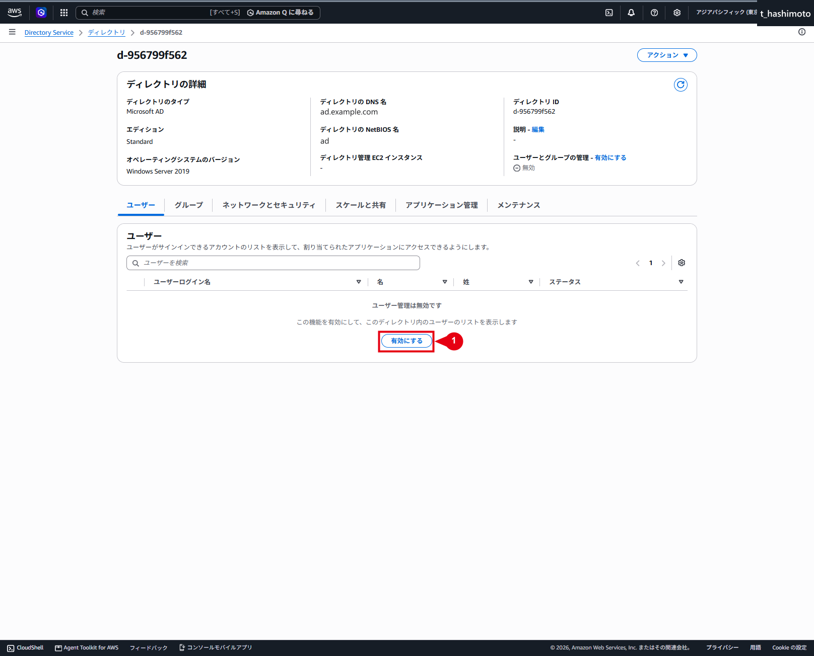

AWS Managed Microsoft AD 構築・管理
AWS Managed Microsoft AD構築手順
仕様
構成・動作
AWS Managed Microsoft ADを作成すると、AWSが高可用性に必要な基盤と、ディレクトリ管理に使用するActive Directoryオブジェクトを自動で構成します。
AWSが構成する基盤
| 作成内容 | 役割・運用上の扱い |
|---|---|
| 2台のドメインコントローラー | 異なる2つのアベイラビリティーゾーンへ配置されます。主系／待機系ではなく、どちらも通常時から稼働する書き込み可能なドメインコントローラーです。 |
| ENI | 各ドメインコントローラーをVPCへ接続します。 |
| セキュリティグループ | Active Directoryの通信に必要なルールが設定されます。初期状態では、作成先VPCのプライマリIPv4 CIDRからの通信が許可されます。 |
| 2つのDNS IPアドレス | ドメイン参加、名前解決、認証およびグループポリシーの参照に使用します。クライアント側のDNS設定は、ディレクトリ作成後に別途行います。 |
| バックアップと暗号化 | バックアップは1日1回自動実行され、ドメインコントローラーのAmazon EBSボリュームは暗号化されます。 |
AWS Managed Microsoft ADで作成される内容
⚠️ 注意：ディレクトリ用ENIを削除しない
AWSが自動作成したディレクトリ用ENIは、VPCとドメインコントローラー間の通信に必要なため、手動で削除しません。説明欄のAWS created network interface for directory <directory-id>で識別できます。
管理範囲
Active Directory内に作成される管理領域
| 作成内容 | 役割・運用上の扱い |
|---|---|
Adminユーザー |
ディレクトリ管理者として、NetBIOS名と同名のOU配下にあるUsersへ作成されます。本環境ではad\Usersです。 |
AWS Delegated Groups OU |
ユーザーへ管理権限を委任するためのグループが格納されます。GPO管理や詳細なパスワードポリシー管理など、作業内容に対応する委任グループを使用します。 |
AWS Reserved OU |
AWSが使用するサービス管理アカウントが格納されます。お客様が管理対象として使用する領域ではありません。 |
ad OU |
ディレクトリ作成時に指定したNetBIOS名に基づく管理用OUです。配下にComputersとUsersが作成され、お客様が管理するコンピューターとユーザーを配置します。 |
ℹ️ 情報：IAMとActive DirectoryのAdminの違い
AWSの構築・設定操作に使用するIAMユーザー／IAMロールと、Active Directoryの管理に使用するAdminは、別のID・権限として管理します。Adminを作成しても、AWSリソースへのアクセス権は自動で付与されません。
AWSが作成して適用するGPO
| GPO | 主な適用対象・役割 |
|---|---|
Default Domain Policy |
ドメインへ適用され、パスワードとKerberosのポリシーを設定します。 |
ServerAdmins |
ドメインコントローラー以外のコンピューターへ、委任されたサーバー管理者グループをローカル管理者として設定します。 |
AWS Reserved Policy:User |
AWS Reserved OU内のユーザーへAWS推奨のセキュリティ設定を適用します。 |
AWS Managed Active Directory Policy |
すべてのドメインコントローラーへAWS推奨のセキュリティ設定を適用します。 |
TimePolicyNT5DS / TimePolicyPDC |
PDC Emulatorとそれ以外のドメインコントローラーに、それぞれ必要な時刻同期設定を適用します。 |
Default Domain Controllers Policy |
作成されますが、AWS Managed Microsoft ADでは代わりにAWS Managed Active Directory Policyが使用されます。 |
AWS Managed Microsoft ADで作成される内容
制約事項
AWSが作成したGPOは、削除、編集または既存リンクの解除を行えません。お客様固有の設定は専用GPOとして作成し、お客様が管理するOUへリンクします。
AWS Managed Microsoft ADで作成される内容
ℹ️ 情報：ドメインコントローラーの管理方法
ドメインコントローラー本体へ、RDPやPowerShell Remotingで直接ログオンすることはできません。AD管理ツールを使用する作業は、ドメイン参加済みの管理用EC2から実施します。管理用EC2の準備と接続方法は、管理用EC2起動・接続・AD管理開始手順を参照してください。
構築作業
1. Directory Serviceのセットアップを開始する
- AWSマネジメントコンソールへサインインします。
- 画面右上で、リージョンが「アジアパシフィック（東京）」になっていることを確認します。
- サービス検索から「Directory Service」を開きます。
- 「ディレクトリのセットアップ」で「AWS Managed Microsoft AD」を選択します。
- 「ディレクトリのセットアップ」を選択します。

2. ディレクトリタイプを選択する
- 「ディレクトリタイプ」で「AWS Managed Microsoft AD」を選択します。
- 「AWS Managed Microsoft ADの使用を開始する」で「AWS managed ADドメインを新規作成」を選択します。
- 「次へ」を選択します。
本環境ではAWS Managed Microsoft ADを新規作成するため、「既存のADドメインをハイブリッドディレクトリで拡張・新規」は選択しません。

3. ディレクトリ情報を入力する
DNS名はActive Directoryで使用する完全修飾ドメイン名です。NetBIOS名はドメインの短縮名として使用します。
⚠️ 注意：ディレクトリのDNS名を既存のDNS名前空間と重複させない
同じ名前のAmazon Route 53プライベートホストゾーンなどが存在すると、クライアントの名前解決に影響する可能性があります。入力前に既存のDNS名前空間と重複していないことを確認します。
「ディレクトリ情報を入力」画面では、次の設定値を使用します。
| 項目 | 設定値 |
|---|---|
| ディレクトリのタイプ | Microsoft AD |
| エディション | Standard Edition |
| ディレクトリのDNS名 | ad.example.com |
| ディレクトリのNetBIOS名 | ad |
| ディレクトリの説明 | 未入力 |
- エディションで「Standard Edition」を選択します。
- ディレクトリのDNS名に
ad.example.comを入力します。 - ディレクトリのNetBIOS名に
adを入力します。 - ディレクトリの説明は未入力とします。
- 続けて、次の「Adminパスワードを入力する」でパスワードを設定します。
ℹ️ 情報：クライアントのDNS設定は後続手順で実施する
ディレクトリを作成しただけでは、VPC内のクライアントが自動的にDirectory ServiceのDNS IPアドレスを使用する状態にはなりません。管理用EC2などの名前解決に必要なDHCPオプションセットまたはクライアントDNS設定は、後続手順で実施します。

4. Adminパスワードを入力する
- 「Adminパスワード」に、準備したパスワードを入力します。
- 「パスワードを確認」に、同じパスワードを再入力します。
- 次のパスワード要件を満たしていることを確認します。
- 文字数：8文字以上64文字以下
- 小文字、大文字、数字、英数字以外の文字の4分類のうち、3分類以上を含む
adminという単語を含まない
- 「次へ」を選択します。
⚠️ 注意：Adminパスワードの最長有効期間は既定で42日
AWS Managed Microsoft ADのDefault Domain Policyでは、Adminを含むユーザーのパスワード最長有効期間が42日に設定されます。運用開始前に、パスワードの保管担当者、変更担当者および次回変更日を決定します。

5. VPCとサブネットを選択する
「VPCとサブネットを選択」画面では、次の設定値を使用します。
| 項目 | 設定値 |
|---|---|
| VPC | ad-vpc-002（192.168.225.0/24） |
| ネットワークタイプ | IPv4のみ |
| サブネット1 | ad-pri-sub-002-002a（192.168.225.64/27、ap-northeast-1a） |
| サブネット2 | ad-pri-sub-002-002c（192.168.225.96/27、ap-northeast-1c） |
| 初期ADサイト名 | Default-First-Site-Name |
⚠️ 注意：サブネット1とサブネット2のアベイラビリティーゾーンを照合する
サブネット1がap-northeast-1a、サブネット2がap-northeast-1cに属していることを確認してから「次へ」を選択します。
- VPCで
ad-vpc-002を選択します。 - ネットワークタイプで「IPv4のみ」を選択します。
- サブネット1で
ad-pri-sub-002-002aを選択します。 - サブネット2で
ad-pri-sub-002-002cを選択します。 - 選択した2つのサブネットが、それぞれ
ap-northeast-1aとap-northeast-1cに属していることを確認します。 - 「次へ」を選択します。

6. 設定内容を確認して作成する
「確認と作成」画面で、次の内容を確認します。
- ディレクトリタイプ：「Microsoft AD」
- エディション：「Standard」
- DNS名：
ad.example.com - NetBIOS名：
ad - VPC：
ad-vpc-002／サブネットCIDR：192.168.225.64/27、192.168.225.96/27
⚠️ 注意：ディレクトリの作成後は構成変更に制約がある
DNS名、VPCおよびサブネットの誤りがないことを確認してから作成します。入力値に誤りがある場合は「ディレクトリの作成」を選択せず、該当画面へ戻って修正します。
内容に問題がなければ、「ディレクトリの作成」を選択します。

AWS Directory Serviceによるユーザーおよびグループメンバーシップ管理手順
仕様
構成・動作
AWS Directory Service Dataは、AWS Managed Microsoft ADのユーザー、グループおよびグループメンバーシップを管理する機能です。「ユーザーとグループの管理」を有効化すると、AWSマネジメントコンソールから対応する操作を実施できます。
| 操作 | 動作・運用上の扱い |
|---|---|
| 管理機能の有効化 | 対象ディレクトリで行う初期設定です。有効になっている場合は、作業のたびに有効化し直す必要はありません。 |
| ユーザーの作成 | ログイン名、初期パスワード、氏名などを設定してユーザーアカウントを作成します。作成時に既存グループへ追加できます。 |
| グループへの追加 | ユーザーは追加先グループに割り当てられた役割・権限を継承します。 |
| グループからの削除 | 指定したグループのメンバーシップを削除します。ユーザーアカウント自体は残ります。 |
| ユーザーアカウントの削除 | ユーザーアカウント自体を削除します。グループメンバーシップの削除とは操作対象が異なります。 |
AWS Managed Microsoft ADのユーザーとグループの管理
管理範囲
管理方法の使い分け
| 管理方法 | 使用する作業 |
|---|---|
| AWS Directory Service Dataコンソール | 本手順の管理機能の有効化、ユーザーの作成・削除、既存グループへのメンバー追加・削除に使用します。 |
| 管理用EC2のAD管理ツール | Directory Service Dataが対応していない操作や属性の管理に使用します。ADUC（Active Directoryユーザーとコンピューター）、ADAC（Active Directory管理センター）またはPowerShellで操作します。パスワードポリシーの設定はADACで実施します。 |
Amazon EC2インスタンスによるユーザーとグループの管理
ℹ️ 情報：IAM権限とActive Directoryの権限の違い
Directory Service Dataコンソールの操作には、作業者のIAM権限を使用します。ドメイン参加済みの管理用EC2からAD管理ツールを使用する場合は、Active Directory内で作業に必要な権限を持つユーザーとしてサインインします。IAMのAdministratorAccessだけで、AD管理ツール上の管理権限が付与されるわけではありません。
アカウントと委任グループの役割
| 管理対象 | 役割・運用上の扱い |
|---|---|
Admin |
お客様用OUとAWSから委任された範囲を管理するアカウントです。Domain AdminsおよびEnterprise Adminsのメンバーではありません。日常運用では、作業者を識別できる管理ユーザーを使用します。 |
Administrator |
AWSが排他的に管理する組み込みの高権限アカウントです。お客様の作業では使用・変更しません。 |
AWS Reserved OU内のAWS_で始まるアカウント |
AWSが使用するサービス管理アカウントです。お客様の作業では変更しません。 |
krbtgt |
Kerberosで使用するアカウントです。お客様のユーザー管理作業では変更しません。 |
AWS Delegated Groups OU |
用途別のAWS Delegated ...グループを格納するOUです。 |
AWS Delegated Administrators |
お客様用OUなどに対して強い委任管理権限を持つグループです。一般ユーザーには付与しません。 |
AWS Delegated FSx Administrators |
FSx管理用の高権限グループです。FSx管理を担当するユーザーを追加します。 |
管理者アカウントとグループのアクセス許可／AWS Managed Microsoft ADで作成される内容
既存のグループの入れ子関係は、ユーザーの追加・削除とは別に管理します。図10・12に表示される既存の子グループAWS Delegated Administratorsや、図14・15のAWSAdministratorsは変更しません。環境固有のグループは、所有者と用途を確認してから変更します。
制約事項
- 管理機能の有効化とDirectory Service Dataによるユーザー・グループ管理は、対象ディレクトリのプライマリリージョンで実施します。
- 本手順で使用するDirectory Service Dataコンソールでは、作成後のユーザーログイン名を変更できません。
Directory Service Dataの有効化・無効化／ユーザーの表示と更新
パスワードポリシーの既定値
AWS Managed Microsoft ADのDefault Domain Policyには、次の値が設定されます。PSO（きめ細かなパスワードポリシー）が割り当てられていないユーザーには、このドメイン既定ポリシーが適用されます。
| 項目 | AWS既定値 |
|---|---|
| パスワード履歴 | 24個 |
| 最長有効期間 | 42日（Adminを含む） |
| 最短有効期間 | 1日 |
| 最小長 | 7文字 |
| 複雑さ | 有効 |
| 可逆暗号化による保存 | 無効 |
AWS Managed Microsoft ADのパスワードポリシー
⚠️ 注意：Adminパスワードの最長有効期間は既定で42日
Adminもパスワードの有効期間の対象です。運用開始前に、パスワードの保管担当者、変更担当者および次回変更日を決定します。
AWSが作成したDefault Domain Policyは、編集、削除または既存リンクの解除を行えません。異なるパスワードポリシーが必要な場合は、ADACのSystem\Password Settings Containerに用意されているCustomerPSO-01～CustomerPSO-05を設定し、ユーザーまたはセキュリティグループへ割り当てます。
| PSO | 変更できない優先順位値 |
|---|---|
CustomerPSO-01 |
10 |
CustomerPSO-02 |
20 |
CustomerPSO-03 |
30 |
CustomerPSO-04 |
40 |
CustomerPSO-05 |
50 |
ユーザーへ直接割り当てたPSOは、グループ経由のPSOより優先されます。同じ適用区分で複数のPSOが該当する場合は、優先順位値が小さいPSOが優先されます。運用では、管理対象に応じたセキュリティグループ単位での割り当てを基本とします。
管理者によるパスワードのリセットでは、パスワード履歴と最短有効期間は適用されません。最小長や複雑さなどの品質要件は、パスワードの変更・リセット時に評価されます。
ℹ️ 情報：パスワードリセット後のアカウント状態
Adminなどのパスワードは後から取得できません。Directory Serviceのパスワードリセットでは、対象アカウントが無効の場合も有効化されるため、実施後にアカウント状態を確認します。
構築作業
1. ユーザーとグループの管理機能を有効化する
- AWSマネジメントコンソールへサインインし、プライマリリージョンのアジアパシフィック（東京）を選択します。
- Directory Serviceの「ディレクトリ」を開きます。
- ディレクトリID、DNS名
ad.example.com、ディレクトリタイプ「Microsoft AD」およびステータス「アクティブ」を照合します。 - 対象ディレクトリIDのリンクを選択し、詳細画面を開きます。

- 「ユーザー」タブを選択します。
- 「ユーザーとグループの管理」が「無効」になっている場合は、「有効にする」を選択します。既に「有効」の場合は、手順8へ進みます。

- 確認ダイアログの説明と対象ディレクトリを確認し、「有効にする」を選択します。

- 「ユーザーとグループの管理」が「有効」に変わり、「ユーザー」タブに一覧と「ユーザーを作成」が表示されることを確認します。

⚠️ 注意：管理機能を無効化する前に利用状況を確認する
誤って有効化した場合は、Directory Service Dataを使用する運用や自動処理がないことを確認してから、同じ詳細画面で無効化します。
運用作業
1. ユーザーを新規作成する
「ユーザーの詳細を指定」画面では、次の設定値を使用します。
| 項目 | 設定値 |
|---|---|
| ユーザーログイン名 | sampleadmin |
| 初期パスワード・確認用パスワード | 準備した同一のパスワードを入力します。値は記載しません。 |
| 名 | sample |
| 姓 | admin |
| 表示名 | sample admin |
| メールアドレス | t_hashimoto@example.com |
| 作成時に追加するグループ | AWS Delegated Administrators |
ℹ️ 情報：設定表と掲載画像の対応
上表は図7の作成確認画面の内容に合わせています。図5・11は名と姓、図5・13は表示名が図7と異なり、図5のメールアドレスは未入力です。入力・照合には上表を使用し、グループ操作の対象はユーザーログイン名sampleadminで確認します。
⚠️ 注意：ユーザーログイン名を入力前に確認する
本手順で使用するDirectory Service Dataコンソールでは、作成後のユーザーログイン名を変更できません。綴りと命名規則を確認してから入力します。
- 対象ディレクトリの「ユーザー」タブで「ユーザーを作成」を選択します。
- ユーザーログイン名に
sampleadminを入力します。 - 初期パスワードを入力し、確認用の欄へ同じパスワードを再入力します。
- 名、姓、表示名およびメールアドレスを、上表に従って入力します。その他の任意項目は、作業依頼に指定がある場合だけ入力します。
- パスワードが伏字になっていることを確認し、「次へ」を選択します。

⚠️ 注意：AWS Delegated Administratorsは管理担当者だけに付与する
AWS Delegated Administratorsは、強い委任管理権限を持つグループです。本手順では管理ユーザーsampleadminを追加します。一般ユーザーを作成する場合は、このグループを選択せず、業務に必要なグループだけを指定します。
- 「ユーザーをグループに追加」で、
AWS Delegated Administratorsを選択します。作成時にグループを指定しない運用の場合は、グループを選択せずに進みます。 - 選択したグループを確認し、「次へ」を選択します。

- 確認画面で、ログイン名、名、姓、表示名、メールアドレスおよび所属予定グループを設定表と照合します。
- 内容に問題がなければ、「ユーザーを作成」を選択します。

- 作成成功メッセージと、ユーザー一覧に
sampleadminが表示され、ステータスが「有効」になっていることを確認します。

一覧への反映が遅れている場合は、画面を更新して待機します。表示結果を確認するまで、同じ作成操作を繰り返しません。
2. 既存ユーザーをグループへ追加する
| 項目 | 設定値 |
|---|---|
| 追加先グループ | AWS Delegated FSx Administrators |
| 追加するユーザー | Admin、sampleadmin |
⚠️ 注意：FSx管理を担当するユーザーだけを追加する
AWS Delegated FSx Administratorsは、FSx管理用の高権限グループです。作業依頼と追加対象を照合してから操作します。既存の子グループは変更しません。
- 対象ディレクトリの「グループ」タブを開きます。
AWS Delegated FSx Administratorsを検索します。- 検索結果のグループ名リンクを選択し、詳細画面を開きます。

- グループ名、識別名、SID、グループタイプ、グループの範囲および既存メンバーを確認します。
- 「メンバーを追加」から「ユーザーを追加」を選択します。「グループを追加」は選択しません。

- 追加するユーザーを検索し、ログイン名とステータスを照合します。
Adminとsampleadminを選択します。- 「選択したユーザー」に追加対象の2ユーザーだけが表示されていることを確認し、「ユーザーをグループに追加」を選択します。

- メンバー追加の成功メッセージと、メンバー一覧に
Adminとsampleadminが表示されることを確認します。

sampleadminのユーザー詳細を開き、グループメンバーシップにAWS Delegated FSx Administratorsが表示されることを確認します。

図13はユーザー詳細での所属確認に使用します。上部のメッセージはメンバー追加の結果です。2ユーザーの追加結果は図12、ユーザー作成の結果は図8で確認します。
未反映の場合は画面を更新して待機し、状態を確認するまで同じ追加操作を繰り返しません。誤って追加した場合は、誤追加したグループから対象ユーザーのメンバーシップを削除します。次の手順の操作方法を参照し、グループ名とユーザー名は実際に誤追加した対象へ置き換えます。
3. ユーザーをグループから削除する
| 項目 | 設定値 |
|---|---|
| 削除元グループ | AWS Delegated Administrators |
| グループから削除するユーザー | sampleadmin |
ℹ️ 情報：グループから削除してもユーザーアカウントは残る
この操作で削除する対象は、指定グループのメンバーシップです。ユーザーアカウント自体や、他のグループへの所属は残ります。
- 対象ディレクトリの「グループ」タブで、
AWS Delegated Administratorsを開きます。 - 「メンバー」タブで、ログイン名が
sampleadmin、メンバータイプが「ユーザー」の行を確認します。 sampleadminだけを選択し、削除元グループ名とユーザーログイン名を再確認します。

⚠️ 注意：削除を選択する前にグループとユーザーを再確認する
本手順の掲載画面では、「削除」を選択した後に確認ダイアログは表示されず、メンバーシップの削除が実行されます。対象グループがAWS Delegated Administrators、対象ユーザーがsampleadminと一致していることを確認してから操作します。
- 対象に誤りがなければ、「削除」を選択します。
- 削除成功メッセージを確認し、メンバー一覧から
sampleadminが消え、その他のユーザーや子グループが残っていることを確認します。

- 「ユーザー」タブで
sampleadminを検索し、ユーザーアカウント自体が残っていることを確認します。
誤って削除した場合は作業依頼を確認し、削除元のグループへ対象ユーザーを再追加します。前の手順の操作方法を参照し、グループ名とユーザー名は実際に誤削除した対象へ置き換えます。グループから継承した権限の変更は、関連サービスでの再サインイン後に確認が必要になる場合があります。
4. ユーザーアカウントを削除する
| 項目 | 設定値 |
|---|---|
| 削除するユーザー | samplework |
| 表示名 | sample work |
削除前に、ログイン名、表示名、氏名、アカウントの状態および最終利用状況を作業依頼と照合します。WorkSpaces、FSx、共有フォルダー、バッチやサービスアカウントなどで使用されていないことを確認し、削除対象ユーザーのSIDと全グループメンバーシップを記録して保管します。
⚠️ 注意：ユーザーアカウントの削除はアクセス権にも影響する
この操作は、ユーザーアカウント自体を削除します。削除前の無効化期間やデータ引継ぎなど、必要な対応が完了していることを確認します。同じログイン名で新規作成してもSIDが変わるため、以前のアクセス権は自動では復旧しません。
- 対象ディレクトリの「ユーザー」タブを開きます。
sampleworkを検索し、削除対象ユーザーだけを選択します。

- 「アクション」から「ユーザーアカウントを削除」を選択します。

- 確認ダイアログのユーザーログイン名
sampleworkと表示名sample workを照合します。 - 対象ユーザーの情報と、アクセスに必要な情報が削除される旨を確認します。
- 対象に誤りがなければ、「ユーザーアカウントを削除」を選択します。

- 削除成功メッセージを確認します。
- 「ユーザー」タブで
sampleworkを検索し、一覧に表示されず、対象外のユーザーが残っていることを確認します。

一覧への反映が遅れている場合は、画面を更新して待機します。状態を確認するまで、削除操作を繰り返しません。
❌ エラー：誤ったユーザーを削除した場合
追加の変更を停止し、対象ユーザーと影響範囲を確認します。復旧手順が整備されている場合は、ドメイン参加済みの管理用端末からActive Directory Recycle Binによる復元を検討します。ディレクトリのスナップショット復元はディレクトリ全体へ影響するため、単一ユーザーの通常復旧として実施しません。
5. パスワードポリシーを設定する（必要時）
この操作は、ドメイン既定のパスワードポリシーとは異なる設定が必要な場合に実施します。掲載画像のユーザー作成・グループ操作に必須の作業ではありません。
- ドメイン参加済みの管理用EC2へ、必要なAD管理権限を持つユーザーでサインインします。
- AD管理ツールが未導入の場合は、管理者権限のPowerShellで次のコマンドを実行します。
Install-WindowsFeature RSAT-ADDSDNS管理も行う場合は、サーバーマネージャーでDNS Server Toolsを追加します。
- 操作ユーザーが
AWS Delegated Fine Grained Password Policy Administratorsのメンバーになっていることを確認します。 - ADACを起動してツリービューへ切り替え、
System\Password Settings Containerを開きます。 - 使用する
CustomerPSO-01～CustomerPSO-05を開きます。 - 承認されたパスワード履歴、長さ、有効期間、複雑さおよびロックアウト値を設定します。優先順位値は変更できません。
- 「直接の適用先」へ対象ユーザーまたはセキュリティグループを追加し、変更を保存します。
- レプリケーション後、「作業後確認」の手順で対象ユーザーの実効ポリシーを確認します。
パスワードポリシーの割り当てと確認／パスワードポリシー管理権限の委任
作業後確認
ユーザーとグループの状態を確認する
作業依頼で指定された操作の結果を確認します。本手順の掲載例を順に実施した場合は、次の最終状態を確認します。
- ディレクトリの詳細で、「ユーザーとグループの管理」が「有効」になっていることを確認します。
- 「ユーザー」タブで
sampleadminが「有効」と表示されることを確認します。 AWS Delegated FSx Administratorsのメンバーに、Adminとsampleadminが表示されることを確認します。AWS Delegated Administratorsのメンバーにsampleadminが表示されず、既存の対象外メンバーが残っていることを確認します。- 「ユーザー」タブで
sampleworkを検索し、一覧に表示されないことを確認します。
パスワードポリシーの適用結果を確認する（変更時のみ）
- 管理用EC2のPowerShellで、対象ユーザーの実効PSOを確認します。
<ユーザー名>は確認対象のログイン名へ置き換えます。
Get-ADUserResultantPasswordPolicy -Identity '<ユーザー名>'- 想定した
CustomerPSO-0xと設定値が返されることを確認します。 - PSOを割り当てていないユーザーについてドメイン既定値を確認する場合は、次のコマンドを使用します。
Get-ADDefaultDomainPasswordPolicy -Identity 'ad.example.com'Get-ADUserResultantPasswordPolicyは、Default Domain Policy自体の内容を表示するコマンドではありません。実効ポリシーの確認にnet userは使用しません。